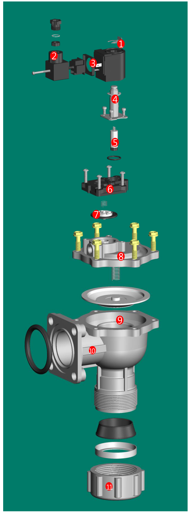

집진기 부품 / 펄스밸브
펄스밸브 Pulse Valve (Diaphragm Valve)
알루미늄 다이캐스팅 바디의 고유량 다이어프램 펄스밸브는 에어 펄스식 집진기(Dust Collector) 전용으로 설계되었습니다. 높은 유량, 긴 수명, 빠른 개폐 응답성을 갖추고 있으며, 솔레노이드 인클로저를 이용한 원격 파일럿(Remote Pilot) 방식과 일체형 솔레노이드(Integral Solenoid) 방식을 모두 지원합니다. 배관 연결은 나사(Screw), 커플링(Coupling), 플랜지(Flange) 타입으로 제공되며, 고온 환경(최대 198℃)을 위한 바이톤(Viton) 다이어프램 옵션도 선택 가능합니다.
사이즈별 시리즈
-
20 시리즈 4종배관 3/4" · Cv 10.5 시리즈 보기 →
-
25 시리즈 4종배관 1" · Cv 18.7 시리즈 보기 →
-
30 시리즈 4종배관 1-1/4" · Cv 46.5 시리즈 보기 →
-
40 시리즈 10종배관 1-1/2" · Cv 53.9 시리즈 보기 →
-
50 시리즈 6종배관 2" · Cv 68.5 시리즈 보기 →
-
60 시리즈 3종배관 2-1/2" · Cv 110.0 시리즈 보기 →
-
75 시리즈 2종배관 3" · Cv 142.0 시리즈 보기 →
전체 모델 사양표 Specifications
| 모델 | 배관 크기 | 작동 방식 | 연결 방식 | Cv 계수 | 중량 |
|---|---|---|---|---|---|
| TH-5820-B | 3/4" | Remote Pilot | Screw Type | 10.5 | 340g |
| TH-5820-C | 3/4" | Remote Pilot | Coupling Type | 10.5 | 555g |
| TH-4820-B | 3/4" | Integral Solenoid | Screw Type | 10.5 | 695g |
| TH-4820-C | 3/4" | Integral Solenoid | Coupling Type | 10.5 | 955g |
| TH-5825-B | 1" | Remote Pilot | Screw Type | 18.7 | 460g |
| TH-5825-C | 1" | Remote Pilot | Coupling Type | 18.7 | 865g |
| TH-4825-B | 1" | Integral Solenoid | Screw Type | 18.7 | 855g |
| TH-4825-C | 1" | Integral Solenoid | Coupling Type | 18.7 | 1290g |
| TH-5830-B | 1-1/4" | Remote Pilot | Screw Type | 46.5 | 795g |
| TH-5430-B | 1-1/4" | Remote Pilot | Screw Type | 46.5 | 960g |
| TH-4830-B | 1-1/4" | Integral Solenoid | Screw Type | 46.5 | 1140g |
| TH-4430-B | 1-1/4" | Integral Solenoid | Screw Type | 46.5 | 1220g |
| TH-5840-B | 1-1/2" | Remote Pilot | Screw Type | 53.9 | 925g |
| TH-5840-C | 1-1/2" | Remote Pilot | Coupling Type | 53.9 | 1670g |
| TH-5840-F | 1-1/2" | Remote Pilot | Inlet Flange Outlet Coupling | 39.0 | 920g |
| TH-5440-B | 1-1/2" | Remote Pilot | Screw Type | 53.9 | 1040g |
| TH-5440-C | 1-1/2" | Remote Pilot | Coupling Type | 53.9 | 1770g |
| TH-4840-B | 1-1/2" | Integral Solenoid | Screw Type | 53.9 | 1315g |
| TH-4840-C | 1-1/2" | Integral Solenoid | Coupling Type | 53.9 | 2030g |
| TH-4840-F | 1-1/2" | Integral Solenoid | Inlet Flange Outlet Coupling | 39.0 | 1260g |
| TH-4440-B | 1-1/2" | Integral Solenoid | Screw Type | 53.9 | 1395g |
| TH-4440-C | 1-1/2" | Integral Solenoid | Coupling Type | 53.9 | 2110g |
| TH-5450-F | 2" | Remote Pilot | Inlet Flange, Outlet Coupling Type | 68.5 | 1800g |
| TH-4850-F | 2" | Integral Solenoid | Inlet Flange, Outlet Coupling Type | 68.5 | 2065g |
| TH-5850-F | 2" | Remote Pilot | Inlet Flange, Outlet Coupling Type | 68.5 | 1705g |
| TH-4450-F | 2" | Integral Solenoid | Inlet Flange, Outlet Coupling Type | 68.5 | 2120g |
| TH-5450-B | 2" | Remote Pilot | Screw Type | 74.2 | 1895g |
| TH-4450-B | 2" | Integral Solenoid | Screw Type | 74.2 | 2240g |
| TH-4460-B | 2-1/2" | Integral Solenoid | Screw Type | 110.0 | 3475g |
| TH-4460-S | 2-1/2" | Integral Solenoid | Screw Type (Straight) | 110.0 | 4730g |
| TH-5460-B | 2-1/2" | Remote Pilot | Screw Type | 96.0 | 3315g |
| TH-5475-B | 3" | Remote Pilot | Screw Type | 142.0 | 3505g |
| TH-4475-B | 3" | Integral Solenoid | Copling Type | 142.0 | 3825g |
모델명 표기법 및 타입 안내 Numbering Rule & Features
TH - 4840 - C
| 구분 | 코드 및 설명 |
|---|---|
| 작동 방식 (1번째 숫자) | 4 : 일체형 솔레노이드 (Integral Solenoid) · 5 : 원격 파일럿 (Remote Pilot) |
| 파일럿 구조 (2번째 숫자) | 4 : 더블 파일럿 (Double Pilot) · 8 : 싱글 파일럿 (Single Pilot) |
| 배관 사이즈 (뒤 2자리) | 20(3/4", 2cm) · 25(1", 2.5cm) · 30(1-1/4", 3cm) · 40(1-1/2", 4cm) · 50(2", 5cm) · 60(2-1/2", 6cm) · 75(3", 7.5cm) |
| 연결 방식 (끝 영문자) | B : 나사(Screw) · C : 커플링(Coupling) · F : 플랜지(Flange) · M : 매니폴드(Manifold) · S : 스트레이트(Straight) |
Valve Lay Out 밸브 구조

- 클립(Clip): 공구 없이 코일을 튜브에 간편하게 탈부착할 수 있는 고정 클립
- DIN 소켓(DIN Socket): 표준화된 전기 결선을 지원하는 mPm DIN 소켓
- 솔레노이드 코일(Solenoid Coil): 충분한 자력을 갖춘 몰딩 방수 코일
- 튜브 어셈블리(Tube Assembly): 내식성이 우수한 마르텐사이트·석출경화계 스테인리스 스틸
- 폴(Pole): 부식 환경에 강한 스테인리스 스틸 가동 철심
- 몰딩 베이스(Molded Base): 빠른 개방 특성을 위한 대용량 파일럿 오리피스 구조
- 솔레노이드 다이어프램(Solenoid Diaphragm): 안정적이고 신속한 작동을 위한 O-링 일체형 구조
- 메인 다이어프램(Main Diaphragm): 내구성이 뛰어난 특수 엘라스토머 코팅 다이어프램
- 밸브 시트(Valve Seat): 표면 조도와 경도를 강화한 정밀 가공 밸브 시트
- 바디(Body): 침적·코팅 처리된 알루미늄 다이캐스팅 본체 및 커버
- 커플링(Coupling): 배관 연결 및 유지보수가 간편한 커플링 너트
주문 시 참고 Things to be aware of
- 나사(B) 타입 주문 시 나사 규격(N: NPT / G: G-Parallel / B: BSP Taper)을 지정해 주세요.
- 일체형(Integral) 타입 주문 시 코일 전압 및 주파수(예: DC 24V, AC 220V/60Hz)를 지정해 주세요.
Spare Part Kit
- SPK1 (다이어프램 키트): 더블 파일럿은 메인 다이어프램·메인 스프링·솔레노이드 다이어프램·솔레노이드 스프링 구성, 싱글 파일럿은 메인 다이어프램·메인 스프링 구성
- SPK2 (파일럿 튜브 키트): 폴 O-링, 패킹 포함 폴, 폴 스프링, 폴 하우징 어셈블리 구성 (원격 파일럿 타입은 해당 없음)
견적 · 규격 문의
모델명과 규격을 알려주시면 신속하게 안내해 드립니다.